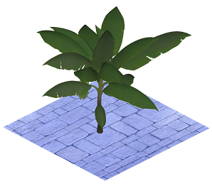

resetMaterial operation
Syntax
resetMaterial()
resetMaterial(target)
Parameters
- target (selector)
Selects which material to reset.shape Default. Only reset the material of the shape. geometry Only reset the material of the geometry. all Reset the materials of both the shape and the geometry.
Description
Resets the targeted material to the CGA default material (i.e. resets all material attributes). Using resetMaterial() without a parameter resets only the material of the shape. If the target is geometry or all and the geometry consists of multiple materials all of them are reset.
Related
- setMaterial operation
- color operation
- texture operation
- set operation
- material attributes
- material.color attribute
- material.map texture layers
- Texturing: Essential Knowledge
- getMaterial function
- readMaterial function
Example
|  |
Lot --> primitiveQuad()
texture("stones.jpg")
set(material.reflectivity, 0.75)
set(material.specular.r, 1)
set(material.specular.g, 1)
set(material.specular.b, 1)
Stones.
i("plant.glb")
resetMaterial()
Flowers.
Using resetMaterial() to get rid of previous changes to the shape material. This guarantees all the material attributes (e.g. the texture) of the inserted asset are used. |
Example 2
Init-->
i("car.glb")
Matler(0)
comp(m) { 0 : Matler(0.75) | 1 : Matler(1.25) }
Matler(tx)-->
alignScopeToAxes()
t(tx,0,0)
X.
t(0,0.5,0)
resetMaterial(geometry)
X.
Using resetMaterial(geometry) to reset the materials of the geometry to the CGA default material. |
Copyright ©2008-2022 Esri R&D Center Zurich. All rights reserved.